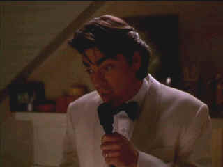
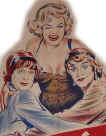

| To Gillian on Her 37th Birthday/
B-,C+ |
| Columbia/1996/93/PS 1.33 |
There's a strain in the fiber of the Lewis
family after the death of Gillian. David is struggling with the loss of
his love and the challenge of bringing up fifteen year-old daughter
Rachel. Returning to their island beach house for the summer, the Lewis
are joined by Gillian's sister Esther and her husband Paul Wheeler. The
Wheelers unexpectedly bring along lady friend Kevin Dollof in an attempt
to break David free from the all-too-real memories of Gillian.
A very romantic and sentimental film, To
Gillian on Her 37th Birthday contains a lot of well etched humor. The
childless Wheelers peck away at an acid marriage. Esther feels Rachel
would be better off living with her for a while, and David is not exactly
thrilled by the idea. Neither is anyone else at the beach house on the
anniversary weekend of Gillian's death.
 |
|
Singing in memory of
Gillian. ©Columbia
|
Michael Pressman directs with a relaxed rhythm
despite the building tensions. There some very touching person to person
scenes. I think the sentiment is not overdone. And the characters are
interesting to be around for almost two hours. There's one amazing scene
between Esther and David. Kathy Baker really smokes as Esther. On the flip
side, there's a scene between Paul and Rachel's friend Cindy that is, is
patently false.
Peter Gallagher is a solid presence as David. He
finds a good mixture of confusion and uncertainty through the unsteady
sandy scenes. Kathy Baker is a consistently fine presence in the films she
graces. A solid citizen performer, she is seldom flashy but always
convincing. Her Esther has great strength and is grounded in reality.
Clare Danes is a charming Rachel. She and Freddie Prinze, Jr. have some
nice moments together exploring a summer romance. Bruce Altman delivers
his lines with crisp intelligence. Michelle Pfieffer has some glowing
moments as Gillian.
It's a winsome production. The charm of Nantucket is
captured by Tim Suhrstedt's warm cinematography. James Horner's score is
very romantic and effective. It doesn't turn saccharine. David may display
the best sand castle I ever saw, and with him buried as King, it's
inspired humor. The final sentimental finish does carry on for a few too
many beats.
There are some shots that appear cropped on this 1.33
transfer, but overall the composition do not appear compromised nor does
the transfer suffer from obvious zooming. The image is slightly soft in a
few scenes but it looks good most of the time. Black levels are excellent.
Night scenes are lovely with excellent depth. Shadow detail is very
good. Source elements are clean. Lot output is powerful bringing
gloss to the image. All those sunny beach scenes feel hot. Wonderful
saturation and detail in the sand sculpture contest. The flags are
awesome. Fleshtones have a natural range. Good color saturation adds
fine dimension to the look. Check out the wonderful color resolution of
the blouses and shirts and fabrics. Details are finely resolved. No
evidence of high peak transition ringing. The music is recorded with
good air and openess. Surround on the Dolby Digital 2.0 is nicely
matrixed. |
|
|
|

Selections from the Feature
Archive include articles on Akira Kurosawa, Frank Darabont, Blonde Bimbos, Hollywood Street Gangs, or Vietnam: The Hollywood Pariah, and many
more....
Sophia mi Amore
Sophia mi Amore: That's what I thought the first time I saw one
of the screen's sexiest women in Boy on a Dolphin. Maybe not in those
words, but you get the idea. For a look a Sophia's career from one
perspective, click on her image. Includes a selection of posters from her
movies.

Some like it Hot/ A, C

Marilyn Monroe wriggles and shakes her way as Sugar Cane to iconic
perfection. Bily Wilder and co writer Diamond concoct some of the
snappiest, slightly licentious, dialogue this side of Preston
Sturges.

 Have you visited Home Theater Talk
lately? One of the friendliest places on the Net for Home Theater and DVD
discussion, you can get help for installation problems or simply share
your opinions with other Vidiots. Have you visited Home Theater Talk
lately? One of the friendliest places on the Net for Home Theater and DVD
discussion, you can get help for installation problems or simply share
your opinions with other Vidiots.

Excellent British based DVD review site that features Region 2 and
Region 1 releases. Check out their fine interviews as well.
MRQE
Find reams of movie and DVD reviews at the Movie Review Query
Engine, a index of reviews appearing on the Internet.

Maximizing home theater sound and image featuring quality
interconnects and speaker wire.
|